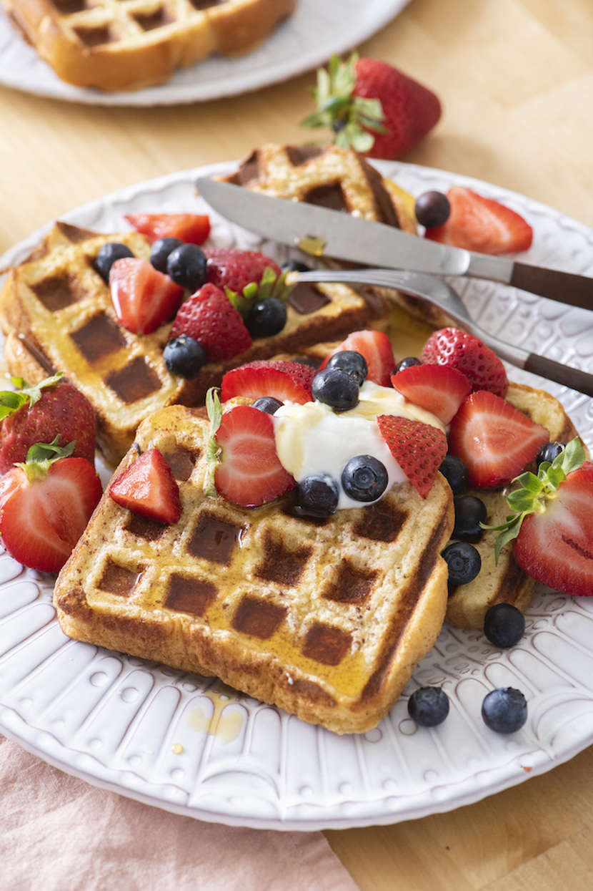

Easy French Toast Waffle

Making French toast in your waffle iron combines the best of both worlds. You get all the custardy richness of French toast plus waffle's signature crispy ridges. All the better to hold more maple syrup.
Ingredients
- cooking spray
- ½cup whole milk
- 2 large eggs
- 1 tablespoon maple syrup
- ½ teaspoon vanilla extract
- 1 pinch salt
- 4 pieces 1/2-inch thick pieces brioche
Steps
- Preheat a waffle iron according to manufacturer's instructions and spray with cooking spray.
- Whisk milk, eggs, maple syrup, vanilla extract, and salt together in a wide bowl until thoroughly combined. Dip bread slices 1 at a time in the egg mixture, coating both sides completely. Lift bread with a slotted spatula to allow excess egg mixture to drain back into the bowl. Place dipped bread slices on a rimmed baking sheet and let rest until mixture soaks in, about 2 minutes.
- Place dipped bread in the preheated waffle iron. Gently close the lid without forcing it down. Cook according to manufacturer's instructions until golden brown, 3 to 5 minutes. Repeat with remaining slices.